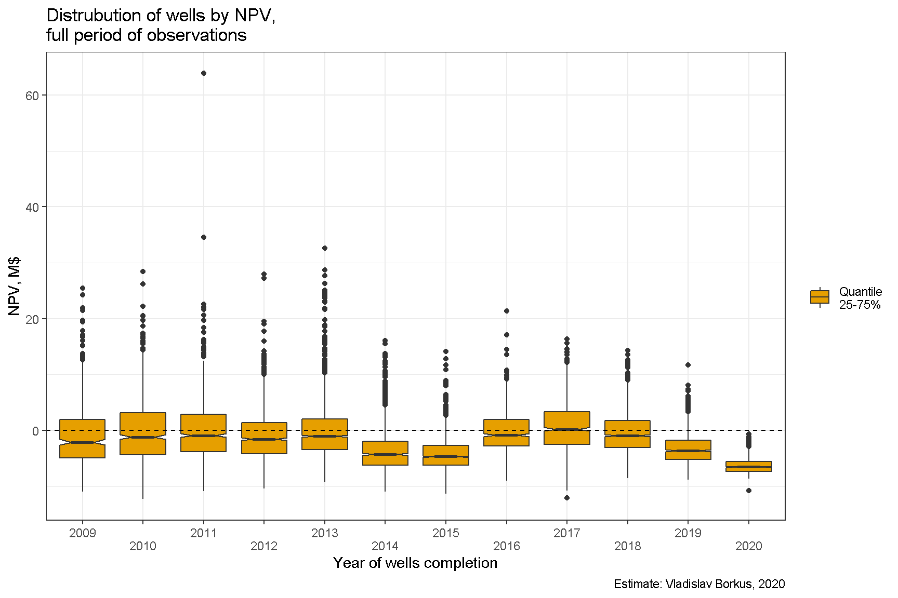

Bakken.05. Распределение окупаемости отдельных скважин
Содержание
Я буду оценивать успешности инвестиций с помощью двух критериев:
NPV (Net present value) для оценки доходности отдельных скважин. В данном случае NPV будет показывать насколько достигнуты цели по доходности, которые ставились при запуске проектов. Будет использована ставка дисконтирования чистого денежного потока, т.е. дохода после вычета всех расходов, в 5% в год, примерно соответствующая ставке по облигациям. Для каждой скважины будет использован весь период наблюдений (т.е. в каждом случае он будет разный).
Фактически полученный чистый доход за весь период с учетом выплат по заемному капиталу. Этот метод больше применим для оценки доходности портфелей проектов, так как предполагается, что если скважина дает операционный доход, то он расходуется на снижение тела долга или реинвестирование в новые проекты того же портфеля. В случае множества скважин доход по одним проектам позволяет не только покрыть убытки по другим, но и снизить тело долга или снизить потребность в заемном капитале, т.е. управлять капиталом эффективно.
Распределение NPV скважин
Ниже приведены диаграммы распределения NPV. Очевидно, что намеченных показателей окупаемости достигли на сегодняшний момент менее половины скважин, завершенных в периоды 2009-2013. Скважины, открытые после удешевления нефти 2014-2015, оказываются далеки от окупаемости в 3/4 случаев, а вот проектов 2016-2017 года, достигших положительного NPV, уже заметно выше.1 Скважины 2019-2020 гг. окупаемости не достигли по очевидной причине - срок их работы пока слишком мал, приведены они просто для иллюстрации тренда.

Более того, оказывается, что в примерно половине проектов 2009-2013 гг. инвесторы не получили даже номинальный денежный доход, т. е. доход без расходов на заемные средства (дисконтирования).

И хуже того - даже просто выручка, без учета затрат на текущее обслуживание, налоги и лицензионные платежи, смогла покрыть первоначальные затраты только для 3/4 скважин.
Половина скважин, например 2009 года завершения, принесла выручку в размере от одного до двух с половиной стоимости скважины. Однако, из этой суммы 18% ушло на лицензионные платежи, 10% в виде налога штата, около 10% ушло на обслуживание и административные расходы. В сумме это почти 40% от номинальной выручки.

Есть несколько возможных причин наблюдаемой низкой доходности/убыточности:
Слишком оптимистичные ожидания цены нефти в 2009-2014 гг.
Слишком оптимистичные ожидания дебитов скважин в 2009-2014 гг. Более-менее надежно находить “хорошие” места научились только в последние несколько лет.
Слишком высокие налоги и лицензионные платежи для данной доходности бизнеса.
Вклад ценового фактора можно приблизительно подсчитать, вычислив цену, необходимую для достижения положительного NPV при фактически полученных дебитах. Сделать это можно в разных предположениях:
Доход от продажи газа и налоги на него принимаются как они были, т. е. предполагается, что цена газа больше зависела от баланса спроса и предложения, чем от цены нефти;
Доход от продажи газа и налоги на него принимаются пропорциональными цене нефти.
Хотя оба этих предположения - сильные упрощения, но для более чем 95% скважин разница между результатами, получаемыми такими способами, составляет менее 15%.
Для достижения окупаемости при ставке дисконтирования DR=5% для 75% скважин потребовалась бы стабильная цена в нефти Северной Дакоте выше $60 ($70 WTI), а для 25-30% - выше $100 ($100 WTI) (при расчетах выручка по методу 1). Иными словами даже если бы цена на нефть сохранилась на уровне $100 WTI, то заметное число скважин “первой волны” принесло бы инвесторам убыток.
Оговорки
Естественно, все приведенные выше рассуждения верны только если выполняются предположения о соответствии модели реальному бизнесу.
Например, выше предполагалось, что дебит скважины не зависит от стоимости скважины, а сама эта стоимость одинакова для всех скважин. Если это предположение нарушается, например, дебит тем больше, чем скважина дороже, то более низкодебитные проекты будут дешевле, а потому лучше окупаться.
Аналогично, делались определенные предположения о размере текущих затрат, рентных платежей и прочего. Так как речь идет об отклонениях в размере единиц процентов годовых, то всего 2 M$ разницы в цене скважины (20% или 2% в год) может сделать до четверти из них рентабельными или нерентабельными с точки зрения модели.
Однако, можно точно сказать, что если доходность и присутствует, то она все равно крайне низкая.
Самая прибыльная скважина
Из сказанного возникает вопрос - если все оценено верно, то за счет чего выживают нефтяные компании? Есть несколько вариантов:
Часть затрат можно уменьшить за счет тонкостей управления активами.
Возможно списывать или периодически реструктурировать долг, т. е. либо объявлять банкротство, либо прятать убытки в будущем.
Компенсировать убытки по одним проектам сверхприбылью по другими проектами.
Как мы видели выше, среди скважин есть несколько десятков “монстров,” которые оказываются супер-рентабельными. Например, вот эта скважина окупила примерно 60 других.


Вопрос, однако, в том, способны ли “монстры” покрыть все убытки от плохих проектов. Для ответа на него перейдем к рассмотрению портфеля проектов.
*(Note. На картинках типа Boxplot нижняя граница прямоугольников соответствует значению, которое превышает 25% скважин, а верхняя - 75% скважин, центр соответствует медиане распределения)*↩︎
Автор Vladislav Borkus
Последнее изменение 2021-04-09
Лицензия (C) Vladislav Borkus